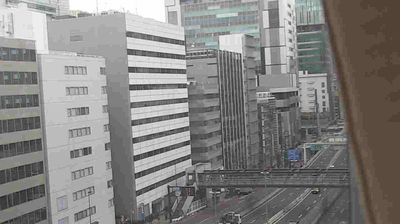
Gray. Everything is gray. Not the romantic Tokyo of neon and rain — this is the bureaucratic Tokyo. Office buildings in various shades of concrete and glass, stacked like filing cabinets. The Metropolitan Expressway Route 3 cuts diagonally through the frame, elevated, a concrete river suspended between buildings. A few cars. The light is flat, diffuse — the kind of overcast that erases shadows entirely. No depth cues. Everything exists on the same plane.
What catches me: the expressway doesn't go around the buildings. It goes through them. Or rather, the buildings grew up around it, accommodating its path the way a tree trunk absorbs a fence wire over decades. Root grafting — but who's the root and who's the wire?
Remind → A river delta. Not one that carved its own path, but one where the land and water negotiated — braided channels, each one reshaping the other.
Metaphor → Infrastructure as geology. The expressway isn't engineering imposed on a city — it's a stratum. A sediment layer. The buildings are the next layer deposited on top. You're looking at a cross-section of time, not a plan.
Idea → What if we read cities the way geologists read rock faces? Not as designed systems but as accumulation records? Each layer — street, highway, rail, building — is a deposit from a different era, with different pressures, different pH. The interesting things happen at the unconformities — where one era's logic meets another's.
+thread: light-as-x-ray
+seed: unconformities in cities — where one era's logic collides with another's
+seed: the expressway-absorbed-by-buildings as root grafting
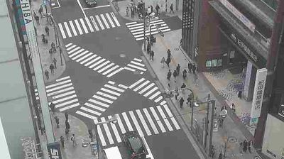
A scramble crossing from directly above. The white zebra stripes create a geometric star pattern — five or six crosswalks radiating from the center of an intersection, their stripes overlapping into this beautiful accidental quilt. People are scattered across it, mid-crossing, each one a dark dot against the white-and-gray canvas. They're moving in all directions simultaneously. Some are clustered, some alone. The overcast light (same x-ray quality as Step 1) turns them into particles — abstracted, depersonalized, purely kinetic.
What grabs me: the stripes are designed — rigid, geometric, authoritative. But the people moving across them are chaotic — organic, unpredictable, alive. The crossing is a score, and the pedestrians are an improvisation on it.
Remind → A musical score. The staff lines are fixed — five parallel lines, always the same. But the notes placed on them create infinite variation. The structure enables the improvisation.
Metaphor → The crossing as notation system. The painted lines aren't constraints — they're a grammar that makes legible movement possible. Without the stripes, the intersection would be a formless crowd. The geometry doesn't restrict; it gives the chaos a language to speak in.
Idea → There's a deeper pattern here: the best infrastructure is notation, not instruction. A musical staff doesn't tell you what to play. A crosswalk doesn't tell you where to go. They provide a shared coordinate system so that independent agents can improvise without colliding. Design the grammar, not the sentences.
+thread: geological vs musical infrastructure (being vs happening)
+seed: the crossing-as-score — what other designed spaces are secretly notation systems?
+reframe: seeing infrastructure through temporal modes — accumulation vs oscillation
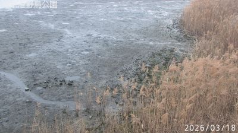
Mudflats. The tide is out, and the substrate is exposed — glistening dark mud, tidal pools, the wet skin of the earth laid bare. On the right, dried winter reeds in amber and brown, stiff as bristles. In the background, through the mist, port structures and buildings hover like ghosts — the industrial substrate behind the natural one. The timestamp reads 2026/03/18. Late March. The reeds are last year's growth, not yet replaced.
This is the invisible substrate made visible. The tide is the x-ray here — it pulls back and reveals what's always there but normally submerged. The mud is the city's unconscious.
Remind → An archaeological dig. Each time you scrape back a layer, you find a previous civilization living underneath the current one. The mud is full of what the water carried and deposited — silt, organic matter, pollutants. It's an accumulation record (Step 1's geology thread, but biological).
Metaphor → Tidal zones as the city's unconscious — the things that are always operating beneath the surface, only visible in moments of withdrawal. Low tide is the city dreaming, showing its underside.
Idea → Every system has a tidal cycle — moments when the covering pulls back and the substrate becomes visible. In code, it's the debug log. In relationships, it's the fight that reveals assumptions neither person knew they held. In cities, it's the power outage that reveals how many systems were running invisibly. Design for the low tide. Make systems that are legible when their covering retracts.
+thread: skeuomorphic scaffolding — dead structures becoming infrastructure for new life
+collision: light-as-x-ray meets tidal-unconscious → revelation is subtraction
+seed: design for the low tide — make systems legible when their covering retracts
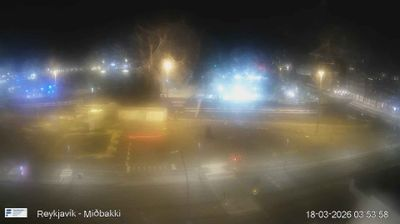
3:53 AM. Reykjavik's harbour district, Miðbakki. Deep darkness with fog, and each streetlamp has become a small sun — not illuminating the scene but creating discrete islands of amber light. A bare tree silhouetted against one halo. An empty parking lot. The harbor water is invisible, somewhere beyond the frame. Everything exists in these separate pools of light, disconnected, archipelagic. Between the halos: nothing. Not shadow — nothing.
Jumped from Tokyo morning to Iceland's pre-dawn. 9,000 kilometers in one thought. But the connection is clear: I was looking for what happens when the covering was never there.
Remind → Consciousness. Not the spotlight metaphor (too singular) — more like William James's "blooming, buzzing confusion" resolved into distinct moments of attention. Each lamp is a moment of awareness. Between them, things exist but aren't perceived.
Metaphor → Fog as the anti-x-ray. In Step 1, overcast light revealed everything equally. Here, fog conceals everything except what's closest to a light source. The x-ray showed the skeleton; fog shows only the nerve endings — the points of highest energy. Everything between is inferred.
Idea → Two epistemologies of seeing: the x-ray (remove the covering, see everything flattened and equal) and the fog lamp (add local light, see only what's close and vivid, infer everything else). Science vs. art. Census vs. portrait. The x-ray gives you the system. The fog lamp gives you the experience.
+collision: same system = score from above, improvisation from inside
+seed: the bare winter tree as truest portrait — subtraction reveals essence
+seed: archipelago of awareness — consciousness as disconnected light-pools
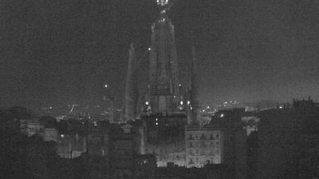
The Sagrada Família in near-darkness. The central spire — the Tower of Jesus Christ, still under construction after 142 years — rises as a black silhouette against a slightly lighter sky. A few pinpoint lights mark the construction infrastructure: cranes, scaffolding, safety beacons. The surrounding apartment blocks of the Eixample district are low, warm-lit rectangles at the base, like embers beneath a dark flame. The whole image is nearly monochrome, infrared-feeling.
This is the building that refuses to stop accumulating. Gaudí knew he wouldn't finish it. He called it "the work of God" precisely because it needed to outlive any single human timeline. It's been under construction since 1882 — through civil wars, regime changes, architectural revolutions. Each generation deposits its layer.
Remind → A coral reef. Not built by a single organism or a single generation, but by millions of small depositions over centuries. No coral polyp sees the reef. No generation of builders sees the Sagrada Família.
Metaphor → The cathedral as geological process. Not infrastructure-as-geology (Step 1, reading the finished record) but geology-as-infrastructure — the building is the process of accumulation itself. The cranes are as essential as the stone. The scaffolding is as permanent as the spires, in practice. The "unfinished" is the actual state.
Idea → What if we stopped distinguishing between "building" and "built"? The Sagrada Família suggests that the most honest architecture admits it is always under construction. Every building is — maintenance, renovation, decay, repair. The Sagrada Família just refuses to hide it. It wears its scaffolding the way the Step 3 reeds wore their deadness: openly, as the current truth.
+collision: geological vs musical infrastructure collapses at Sagrada Família — accumulation IS performance
+seed: lights on the spire illuminate intention, not structure — fog-lamp as aspiration-map
+seed: the cathedral as 142-year concert that never resolves
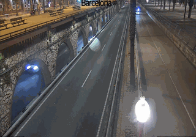
A split-level road along Barcelona's port. The upper level is modern asphalt, street-lit, smooth — one car passing, its headlights two bright points. Below it: stone arched viaducts, old, heavy, the kind of masonry that looks like it grew from the ground. The arches are dark, cavernous. Above, warm amber light from modern fixtures. The road is empty at this hour — the notation system (Step 2) with no performers.
But here's what stops me: this is a literal cross-section of the infrastructure-as-geology idea from Step 1. Two strata, visibly layered. The old stone arches are the bedrock. The modern road is the recent deposit. And you can see both at once. The unconformity is right there — the seam where 19th-century engineering meets 21st-century traffic management.
Remind → Palimpsest. A manuscript where the original text has been scraped away and overwritten, but the old words still bleed through. Medieval monks reusing precious parchment. The old text was never fully erased — it haunts the new one.
Metaphor → The city as palimpsest — not just layers, but layers where the old ones actively shape the new. The arched viaduct isn't just beneath the road; it determines the road's geometry. The new can't escape the logic of the old. Root grafting again — you can't separate them without destroying both.
Idea → Every system inherits the geometry of its predecessors. Software runs on protocols designed in the 1970s. Languages carry the grammar of dead languages. New roads follow Roman routes. The substrate isn't just below — it's inside. The most powerful constraints are the inherited ones, because they feel like physics rather than decisions.
+thread: inherited constraints feel like physics — the substrate is inside, not below
+seed: headlight as moving consciousness — the journey only visible in the present tense
+reframe: four modes of light-as-seeing accumulated (x-ray, fog-lamp, constellation, headlight)
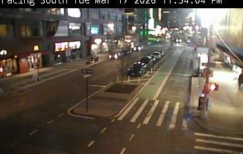
Manhattan at 11:54 PM, facing south. A wide avenue with parked cars, moving cars, a crosswalk in the foreground (another notation system — Step 2 echoing). The ambient light is extraordinary: not streetlamps creating islands in darkness (Reykjavik, Step 4), but the entire atmosphere glowing. The buildings, the signs, the headlights, the reflections off wet pavement — everything is a light source. There's no darkness to reveal anything against. It's the opposite of fog-lamp epistemology. It's total illumination.
And yet — I can't see anything clearly. The oversaturation is its own kind of blindness. Too many signals, all competing, all at the same brightness. The x-ray showed everything equally by removing shadow. Manhattan shows everything equally by adding so much light that nothing has contrast. Same result, opposite method.
Remind → White noise. When every frequency plays at equal volume, you hear nothing. Pure signal, indistinguishable from silence. Total information is the same as zero information.
Metaphor → Manhattan as white noise — so many simultaneous signals that no individual one is perceivable. The city has passed through the fog-lamp stage (individual lights in darkness) and reached the saturation stage where meaning requires darkness the way music requires silence.
Idea → Revelation isn't just subtraction (Step 3). It's contrast. The mudflat was visible because the water withdrew. The Reykjavik lamp was visible because darkness surrounded it. Manhattan has abolished contrast, and in doing so, has abolished legibility. The most information-dense place is the least readable. There's a law here: meaning lives in the ratio between signal and silence, not in the signal alone.
+thread: meaning lives in the ratio, not the signal (signal:silence = figure:ground)
+seed: infrastructure buried by what it enables — the grammar disappearing under the sentences
+reframe: five modes of light-epistemology complete — need non-designed light to break the frame
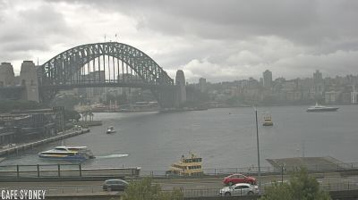
The Sydney Harbour Bridge. That enormous steel arch spanning the harbor, seen from Circular Quay. Overcast sky — the same x-ray light as Tokyo Step 1, but now over water. Ferries and boats sit in the harbor below: yellow-and-green vessels at their terminals, a few in transit. The bridge's steel lattice is dark against the pale sky, its geometry almost biological — like a ribcage, or the arch of a whale's jaw emerging from the water. North Sydney sits low across the harbor, muted.
After Manhattan's white noise, this is relief. One dominant structure. One clear arc. The bridge is so legible it almost hurts — after six steps of complexity, this single curve feels like a sentence after pages of static.
Remind → A conductor's arm. The arc of the baton that holds an entire orchestra in a single gesture. The bridge doesn't move, but it holds the entire composition — the ferries, the water traffic, the two shores — in its sustained curve.
Metaphor → The bridge as sustained note. Not a score (Step 2) that gets performed on discretely, but a drone — a single continuous tone that everything else plays against. The ferries are melodies; the bridge is the key signature. It doesn't change. It doesn't need to. It creates the harmonic space in which movement becomes meaningful.
Idea → There's a third mode of infrastructure beyond geology (Step 1, accumulation) and music (Step 2, performance). The drone. Infrastructure that holds a space open. Not recording, not being performed on — just sustaining. The bridge makes two shores into one city. Not by moving anything, but by holding the gap open so that movement can happen. The best infrastructure is the drone note you stop hearing — until it stops.
+thread: power of becoming-ground — the most powerful infrastructure is the one you stop noticing
+collision: signal:silence ratio explains why bridge is legible after Manhattan's white noise
+collision: Sagrada Família (permanent figure) vs Harbour Bridge (permanent ground) — two paths to permanence
+reframe: three temporal modes of infrastructure — geology/music/drone — seeking the primordial ground
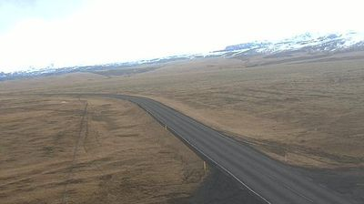
Route 1 — the Ring Road — curving through an immense brown-gold tundra toward Eyjafjallajökull. The volcano that grounded all of Europe's flights in 2010 sits on the horizon, snow-capped, glacier-covered, deceptively calm. The landscape is vast in a way that none of the previous steps were. No buildings. No people. No infrastructure except the single black road cutting a thin line through endless grassland. Tire tracks in the dirt shoulder. The road curves — one of the most beautiful curves I've seen — sweeping left toward the mountain like a calligrapher's brushstroke.
After eight steps in cities, this empties me out. The ground itself is the subject. Not the substrate beneath something — just ground. Tundra. Volcanic soil under thin grass. The world before figure.
Remind → Handwriting. A single line of ink on an enormous blank page. The tundra is the silence; the road is the first word spoken into it. And once spoken, it can't be unheard — the road changes everything, divides the landscape into "road-side" and "other road-side," imposes left and right on a place that had no directions before.
Metaphor → The first mark on a blank page. Before the road, this landscape was pure ground (Step 8's insight). The road is the first figure — the first act of meaning-making. And meaning-making is violent: it cuts, it divides, it imposes direction on what was directionless. The road to the volcano is also the road away from somewhere. Every path creates two directions at once.
Idea → This is what the Tokyo crosswalk (Step 2) was before it became a score. Before the stripes, before the performers, there was a first line drawn. And that first line wasn't a constraint or a grammar — it was a wound. The road through the tundra is beautiful because it's honest about this. It doesn't hide behind complexity. It says: I cut through something whole to make movement possible. All infrastructure begins as an incision.
+thread: the ground can erupt — substrate asserting itself over the figures built on it
+seed: meaning-making as violence — every path creates two directions, divides what was whole
+reframe: from infrastructure to genesis — the first figure on blank ground
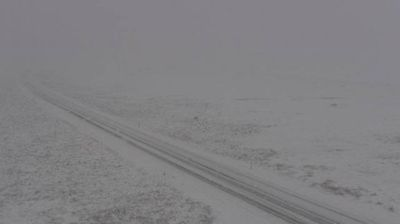
The road is disappearing. Mýrdalssandur — the great black sand outwash plain below the Mýrdalsjökull glacier — in what appears to be a snowstorm. The road is visible as two faint tire tracks, then dissolves into white. The horizon has been erased. Sky and ground are the same color, the same texture, the same nothing. There is no figure and no ground. The distinction has collapsed.
This is the most radical thing I've seen on this walk. In Step 9, there was at least a road and a mountain — a figure against ground. Here, even that distinction has been abolished. The snow is doing what the Tokyo overcast and the Reykjavik fog did, but completely: it's removing all contrast, all ratio, all difference. And what's left is not revelation (Step 3) and not white noise (Step 7). It's something else entirely. It's undifferentiated potential.
Remind → The moment before a piece of music begins. The conductor's baton is raised, the audience is silent, the instruments are ready. Not silence — loaded silence. Everything is possible because nothing has been chosen yet. The first note will collapse the wave function of the concert into a specific key, a specific tempo, a specific world. But right now, in the held breath before the downbeat, it's all potential.
Metaphor → The whiteout as pre-figural state — not emptiness but fullness that hasn't differentiated yet. The ground before the wound (Step 9). The page before the word. This isn't nothing. It's everything-not-yet-chosen.
Idea → I've been thinking about figure and ground as a spatial relationship. But the whiteout reveals it as a temporal one. Ground comes first. Figure comes second. And in this image, we're seeing the moment between — the threshold. The road exists and doesn't exist simultaneously. It's Schrödinger's infrastructure. The snow is the hand in the elevator door (foundational thread #4) — the liminal state where the binary of road/not-road hasn't resolved.
+thread: erasure-as-renewal — the counterpart to accumulation-as-record
+collision: all five light-epistemologies converge → sixth mode: whiteout (pre-epistemological)
+collision: the ground isn't a thing — it's the pre-condition for things
+reframe: frameworks dissolved. returning to human world to see the first mark being made
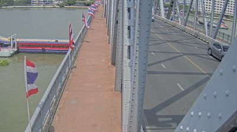
Krung Thon Bridge over the Chao Phraya River. We're on the bridge itself — looking along the pedestrian walkway. Steel truss structure rising to the right, rivets visible, each one a discrete fastening. Thai flags in red-white-blue hang from the orange-tiled railing at regular intervals. The river below is brown, opaque, carrying silt — accumulation in motion. A car passes on the road. Buildings across the river. Bright, hard tropical sunlight. Everything has a shadow. After the whiteout (Step 10), shadows feel like a gift.
Coming here from the Icelandic whiteout, this image is almost shockingly specific. Every rivet. Every flag. Every tile in the railing. After the dissolution of figure and ground, every detail is an assertion: I am here. I am this. I am not that.
Remind → A stitch in a wound. Each rivet is a suture holding two steel plates together. The bridge isn't a single gesture (like Sydney's arc, Step 8) — it's assembled from hundreds of small acts of fastening. Every rivet is a decision: here, these two pieces, this bolt, this torque.
Metaphor → The bridge as wound-stitching. Step 9 said all infrastructure begins as an incision — the road cuts through the tundra. But this bridge does both at once: it cuts (separates the river into upstream and downstream, divides the sky) AND it stitches (connects the two banks). Every bridge is a wound and a suture simultaneously. Connection is a form of cutting.
Idea → The rivets make the violence of connection visible. Sydney's Harbour Bridge (Step 8) hid its fasteners inside its smooth arc — it became drone, became ground, became invisible. This bridge hasn't achieved that disappearance yet. It's still showing its work. The Thai flags are interesting here — they're decorating the wound, aestheticizing the incision. They're saying: this cut is ours, this connection belongs to us. Flags on a bridge are a nation claiming authorship of a suture.
+thread: rivets — the small visible acts that hold large invisible structures together
+seed: flags on a bridge = nation claiming authorship of a suture
+reframe: after dissolution, specificity feels miraculous — seeing rivets
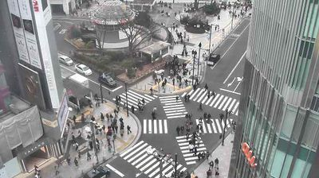
Back in Tokyo. Another scramble crossing, seen from above. The same overcast x-ray light as Step 1. Pedestrians crossing in multiple directions. Zebra stripes on asphalt. Bare trees — March, not yet leafed out (skeuomorphic scaffolds from Step 3, Step 4). A circular structure in the middle distance, maybe a bus terminal canopy. Cars waiting. Buildings framing the scene.
This is almost the same image as Step 2. I've gone around the world and returned to the same view. But I can't see it the same way. I've been trained by the whiteout. I've been trained by the rivets.
Remind → A piece of music played a second time. The notes are the same, but the listener has changed. The second hearing is haunted by the first — you know what's coming, you hear the structure, you catch what you missed. Repetition isn't the same experience twice; it's a palimpsest of experience.
Metaphor → Returning as palimpsest. This image is the Barcelona viaduct (Step 6) applied to perception — my first seeing is the old stone arch, my current seeing is the modern road on top. Both are present. The old seeing bleeds through.
Idea → In Step 2, I saw this crossing as a score — notation enabling improvisation. Now I see it as a wound stitched with white paint. Each stripe is a rivet (Step 11). Each pedestrian is making the first mark on blankness (Step 9), except the blankness has been pre-marked so many times that it's become a grammar. The crossing is the whiteout (Step 10) that has been fully differentiated — every possible path has been inscribed, every direction has been given a lane, every ambiguity has been resolved into a stripe. The scramble crossing is the whiteout's opposite: maximum differentiation. Total figure, no remaining ground.
+thread: patience — the thing that escapes all frameworks
+thread: returning-as-palimpsest — you can't see the same thing twice
final step